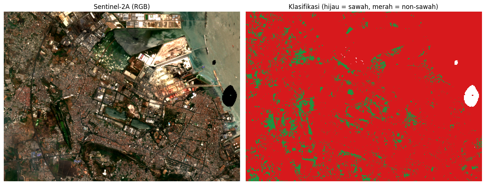

Klasifikasi Sawah dan Non-Sawah Menggunakan Citra Sentinel-2A dengan Random Forest#
Notebook ini melakukan klasifikasi penutup lahan dua kelas, yaitu sawah (kelas 1) dan non-sawah (kelas 0), menggunakan citra Sentinel-2A Level-2A dan algoritma Random Forest (scikit-learn). Data sampel berupa poligon hasil digitasi di QGIS, masing-masing 50 poligon untuk setiap kelas.
Tahapan yang dilakukan adalah sebagai berikut:
Persiapan lingkungan, pustaka, dan data.
Penetapan parameter.
Pembacaan poligon sampel (shapefile), penentuan area kajian, dan visualisasi sebaran sampel pada peta.
Penyediaan citra Sentinel-2A (menggunakan citra yang telah tersedia atau mengunduh dari Copernicus).
Pembacaan citra dan pembentukan fitur (band dan indeks spektral).
Rasterisasi poligon sampel.
Pembagian data latih dan data uji per poligon.
Pelatihan model dan evaluasi.
Klasifikasi seluruh citra dan penghitungan luas.
Penyimpanan keluaran (GeoTIFF, peta, dan ringkasan evaluasi).
1. Persiapan Lingkungan dan Data#
Sel berikut memasang pustaka yang belum tersedia (rasterio dan geopandas) serta memuat seluruh pustaka yang digunakan.
import subprocess, sys
try:
import rasterio, geopandas, folium
except ImportError:
subprocess.check_call([sys.executable, "-m", "pip", "install", "-q", "rasterio", "geopandas", "folium"])
Penjelasan kode: Kode ini memeriksa ketersediaan rasterio dan geopandas. Apabila belum terpasang (misalnya pada Google Colab), kedua pustaka tersebut dipasang secara otomatis menggunakan pip.
import datetime as dt
import math
import os
from pathlib import Path
import folium
import geopandas as gpd
import matplotlib.pyplot as plt
import numpy as np
import pandas as pd
import rasterio
import requests
from folium.plugins import Fullscreen
from matplotlib.colors import ListedColormap
from rasterio import features
from rasterio.warp import transform_bounds, transform_geom
from shapely.geometry import mapping
from sklearn.ensemble import RandomForestClassifier
from sklearn.metrics import (accuracy_score, classification_report,
cohen_kappa_score, confusion_matrix)
---------------------------------------------------------------------------
ModuleNotFoundError Traceback (most recent call last)
Cell In[2], line 8
4 from pathlib import Path
5
6 import folium
7 import geopandas as gpd
----> 8 import matplotlib.pyplot as plt
9 import numpy as np
10 import pandas as pd
11 import rasterio
ModuleNotFoundError: No module named 'matplotlib'
Penjelasan kode: Kode ini mengimpor pustaka untuk pengolahan data vektor (geopandas, shapely), data raster (rasterio), komputasi numerik (numpy), struktur data tabular (pandas), visualisasi statis (matplotlib) dan peta interaktif (folium), permintaan ke layanan Copernicus (requests), serta model dan metrik evaluasi (scikit-learn).
import zipfile
IN_COLAB = "google.colab" in sys.modules
BASE_DIR = Path("/content") if IN_COLAB else Path.cwd()
ZIP_SAWAH = BASE_DIR / "Sawah50.zip"
ZIP_NONSAWAH = BASE_DIR / "Nonsawah50.zip"
# Di Google Colab: unggah Sawah50.zip dan Nonsawah50.zip
# (serta sentinel2a_aoi.tif bila citra sudah diunduh sendiri)
if IN_COLAB and not (ZIP_SAWAH.exists() and ZIP_NONSAWAH.exists()):
from google.colab import files
print("Unggah Sawah50.zip, Nonsawah50.zip, dan (opsional) sentinel2a_aoi.tif")
files.upload()
for berkas in (ZIP_SAWAH, ZIP_NONSAWAH):
if not berkas.exists():
raise FileNotFoundError(f"{berkas.name} tidak ditemukan di {BASE_DIR}")
for berkas, folder in ((ZIP_SAWAH, "datasawah50"), (ZIP_NONSAWAH, "nonsawah")):
with zipfile.ZipFile(berkas) as zf:
zf.extractall(BASE_DIR / folder)
print("Folder kerja:", BASE_DIR)
print("Sawah :", sorted(p.name for p in (BASE_DIR / "datasawah50").iterdir()))
print("Non-sawah:", sorted(p.name for p in (BASE_DIR / "nonsawah").iterdir()))
Unggah Sawah50.zip, Nonsawah50.zip, dan (opsional) sentinel2a_aoi.tif
Saving Nonsawah50.zip to Nonsawah50.zip
Saving Sawah50.zip to Sawah50.zip
Folder kerja: /content
Sawah : ['input.dbf', 'input.prj', 'input.shp', 'input.shx']
Non-sawah: ['input.dbf', 'input.prj', 'input.shp', 'input.shx']
Penjelasan kode: Kode ini menentukan folder kerja (/content pada Google Colab atau folder aktif pada komputer lokal), meminta unggahan berkas ZIP apabila belum tersedia, kemudian mengekstraknya ke folder datasawah50/ dan nonsawah/. Setiap ZIP berisi satu set shapefile (.shp, .shx, .dbf, .prj).
2. Parameter#
Seluruh pengaturan dikumpulkan pada satu sel agar mudah diubah. Apabila berkas sentinel2a_aoi.tif belum tersedia di folder kerja, citra akan diunduh otomatis dari Copernicus untuk area kajian yang dihitung dari shapefile sampel. Apabila berkas tersebut sudah ada (misalnya diunggah manual), proses unduh dilewati kecuali UNDUH_ULANG = True.
# --- Pencarian citra (hanya dipakai bila citra diunduh) ---
UNDUH_ULANG = False # True: unduh ulang citra dari Copernicus
START_DATE = "2026-08-01"
END_DATE = "2026-10-04"
PLATFORM_PREFIX = "S2A" # hanya Sentinel-2A; None untuk semua satelit Sentinel-2
MAX_CLOUD = 30 # persen awan maksimum (level tile)
MAX_TRIES = 5 # jumlah scene terbaik yang dicoba
MIN_VALID = 0.90 # minimal fraksi piksel bebas awan
MASK_CLOUD = True # masking awan memakai band SCL
BUFFER_M = 1500 # margin area unduhan di sekeliling sampel (meter)
# --- Sampel dan model ---
N_SAMPLE = 50 # jumlah poligon sampel per kelas
FILE_SAWAH = sorted((BASE_DIR / "datasawah50").glob("*.shp"))[0] # kelas 1
FILE_NONSAWAH = sorted((BASE_DIR / "nonsawah").glob("*.shp"))[0] # kelas 0
TRAIN_FRAC = 0.7 # proporsi poligon untuk data latih
N_TREES = 200
SEED = 42
# --- Tampilan ---
WARNA = {"sawah": "#1a9641", "non-sawah": "#d7191c"} # warna sawah (hijau) & non-sawah (merah) pada peta
# --- Berkas ---
TIF_IN = BASE_DIR / "sentinel2a_aoi.tif"
INFO_TXT = BASE_DIR / "sentinel2a_aoi_info.txt"
OUT_TIF = BASE_DIR / "klasifikasi_sawah_s2a.tif"
OUT_PNG = BASE_DIR / "peta_klasifikasi.png"
OUT_TXT = BASE_DIR / "hasil_evaluasi.txt"
BAND_NAMES = ["B02", "B03", "B04", "B08", "B11", "B12"]
TOKEN_URL = "https://identity.dataspace.copernicus.eu/auth/realms/CDSE/protocol/openid-connect/token"
CATALOG_URL = "https://sh.dataspace.copernicus.eu/api/v1/catalog/1.0.0/search"
PROCESS_URL = "https://sh.dataspace.copernicus.eu/api/v1/process"
LOG = []
def log(*args):
s = " ".join(str(a) for a in args)
print(s)
LOG.append(s)
Penjelasan kode: Kode ini menetapkan parameter pencarian citra, jumlah sampel (50 poligon per kelas), proporsi data latih (70%), jumlah pohon Random Forest (200), random seed (42), warna tampilan kelas sawah dan non-sawah untuk peta (WARNA), serta lokasi berkas masukan dan keluaran. Fungsi log() mencetak teks sekaligus menyimpannya ke daftar LOG yang kemudian ditulis menjadi hasil_evaluasi.txt.
3. Pembacaan Poligon Sampel dan Penentuan Area Kajian#
Poligon sampel dibaca dari shapefile, diproyeksikan ke WGS-84 (EPSG:4326), dan dipilih secara acak sebanyak N_SAMPLE poligon per kelas. Kotak pembatas (bounding box) seluruh sampel ditambah margin BUFFER_M digunakan sebagai area kajian.
def load_samples_shp(path, n, kelas):
gdf = gpd.read_file(path)
total = len(gdf)
gdf = gdf[gdf.geometry.notna()].copy()
if gdf.crs is None:
log(f"PERINGATAN: {Path(path).name} tidak memiliki CRS. Diasumsikan EPSG:4326.")
elif gdf.crs.to_epsg() != 4326:
gdf = gdf.to_crs(epsg=4326)
if len(gdf) > n:
idx = np.random.default_rng(SEED).choice(len(gdf), n, replace=False)
gdf = gdf.iloc[sorted(idx)].copy()
elif len(gdf) < n:
log(f"PERINGATAN: {Path(path).name} hanya berisi {total} poligon (< {n}).")
gdf = gdf.reset_index(drop=True)
gdf["kelas"] = kelas
gdf["no"] = gdf.index + 1
log(f"{Path(path).name}: {total} poligon di file -> dipakai {len(gdf)}")
return gdf[["kelas", "no", "geometry"]]
def iter_xy(c):
if isinstance(c[0], (int, float)):
yield c[0], c[1]
else:
for s in c:
yield from iter_xy(s)
sawah = load_samples_shp(FILE_SAWAH, N_SAMPLE, "sawah")
non = load_samples_shp(FILE_NONSAWAH, N_SAMPLE, "non-sawah")
geoms_sawah = [mapping(g) for g in sawah.geometry]
geoms_non = [mapping(g) for g in non.geometry]
xy = [p for g in geoms_sawah + geoms_non for p in iter_xy(g["coordinates"])]
pad = BUFFER_M / 111000.0
BBOX = (min(x for x, _ in xy) - pad, min(y for _, y in xy) - pad,
max(x for x, _ in xy) + pad, max(y for _, y in xy) + pad)
log("BBox area (lon/lat):", tuple(round(v, 5) for v in BBOX))
input.shp: 50 poligon di file -> dipakai 50
input.shp: 50 poligon di file -> dipakai 50
BBox area (lon/lat): (112.59068, -7.17462, 112.66543, -7.12093)
Penjelasan kode: Fungsi load_samples_shp membaca shapefile, membuang fitur tanpa geometri, mengubah sistem koordinat ke EPSG:4326, lalu memilih secara acak paling banyak 50 poligon (hasil pemilihan tetap karena SEED tetap). Setiap poligon terpilih diberi label kelas (“sawah”/”non-sawah”) dan nomor urut no, lalu dikembalikan sebagai GeoDataFrame (sawah, non) yang juga dipakai untuk peta pada bagian 3.1. Daftar geometri geoms_sawah/geoms_non diturunkan dari kedua GeoDataFrame tersebut untuk dipakai pada rasterisasi (bagian 6). Fungsi iter_xy meratakan koordinat poligon agar batas terluar seluruh sampel dapat dihitung. Margin BUFFER_M dikonversi ke derajat dengan pendekatan 1 derajat ≈ 111.000 m.
3.1 Visualisasi Sebaran Sampel pada Peta#
Sebelum lanjut ke tahap penyediaan citra, sebaran spasial poligon sampel diperiksa secara visual pada peta interaktif berbasis citra satelit beresolusi tinggi (Esri World Imagery) menggunakan folium.
minx, miny, maxx, maxy = pd.concat([sawah.geometry, non.geometry]).total_bounds
m = folium.Map(
location=[(miny + maxy) / 2, (minx + maxx) / 2],
zoom_start=15,
tiles="https://server.arcgisonline.com/ArcGIS/rest/services/World_Imagery/MapServer/tile/{z}/{y}/{x}",
attr="Esri World Imagery",
control_scale=True
)
# Memasukkan poligon poligon sampel ke peta
for gdf, nama, warna in ((sawah, "Sawah", WARNA["sawah"]), (non, "Non-sawah", WARNA["non-sawah"])):
fg = folium.FeatureGroup(name=f"{nama} ({len(gdf)} poligon)").add_to(m)
folium.GeoJson(
gdf[["kelas", "no", "geometry"]].to_json(),
style_function=lambda f, c=warna: {"color": c, "weight": 2, "fillColor": c, "fillOpacity": 0.45},
highlight_function=lambda f: {"weight": 4, "fillOpacity": 0.7},
tooltip=folium.GeoJsonTooltip(fields=["kelas", "no"], aliases=["Kelas:", "Polygon ke-"]),
).add_to(fg)
# Menambahkan kotak informasi (legend) di pojok peta
m.get_root().html.add_child(folium.Element(
f'''
<div style="position:fixed; bottom:30px; left:30px; z-index:9999; background:white; padding:10px 14px;
border:1px solid #888; border-radius:6px; font:13px sans-serif;">
<b>Sampel Sawah & Non-Sawah</b><br>
<b>Kecamatan Waru, Pamekasan</b><br>
<span style="background:{WARNA['sawah']}; opacity:.75; display:inline-block; width:14px; height:14px;"></span> Sawah ({len(sawah)})<br>
<span style="background:{WARNA['non-sawah']}; opacity:.75; display:inline-block; width:14px; height:14px;"></span> Non-sawah ({len(non)})
</div>
'''
))
Fullscreen().add_to(m)
folium.LayerControl(collapsed=False).add_to(m)
m.fit_bounds([[miny, minx], [maxy, maxx]], padding=(20, 20))
# Tampilkan peta
m
Penjelasan kode: Kotak pembatas (bounding box) seluruh sampel dihitung dari gabungan geometri sawah dan non, lalu dipakai sebagai pusat dan cakupan awal peta. Setiap kelas ditampilkan sebagai lapisan (FeatureGroup) tersendiri dengan warna sesuai WARNA, dilengkapi info poligon (kelas dan nomor urut) saat kursor diarahkan ke salah satu poligon. Kotak keterangan (legend) ditampilkan di pojok kiri bawah peta, sedangkan tombol layar penuh (Fullscreen) dan kendali lapisan (LayerControl) ditambahkan agar sebaran tiap kelas mudah diperiksa secara terpisah.
4. Penyediaan Citra Sentinel-2A#
Fungsi-fungsi berikut hanya dijalankan apabila citra belum tersedia atau UNDUH_ULANG = True. Kredensial OAuth Copernicus tidak ditulis di dalam kode; kredensial dibaca dari variabel lingkungan CDSE_CLIENT_ID dan CDSE_CLIENT_SECRET, atau diminta melalui isian tersembunyi.
def get_token():
from getpass import getpass
cid = os.environ.get("CDSE_CLIENT_ID") or input("CDSE Client ID: ").strip()
secret = os.environ.get("CDSE_CLIENT_SECRET") or getpass("CDSE Client Secret: ")
r = requests.post(TOKEN_URL, data={
"grant_type": "client_credentials",
"client_id": cid,
"client_secret": secret,
}, timeout=60)
if r.status_code != 200:
raise RuntimeError(f"Gagal mengambil token ({r.status_code}): {r.text[:300]}")
return r.json()["access_token"]
def search_scenes(token):
body = {
"collections": ["sentinel-2-l2a"],
"datetime": f"{START_DATE}T00:00:00Z/{END_DATE}T23:59:59Z",
"bbox": list(BBOX),
"limit": 100,
}
headers = {"Authorization": f"Bearer {token}"}
feats = []
while True:
r = requests.post(CATALOG_URL, json=body, headers=headers, timeout=120)
if r.status_code != 200:
raise RuntimeError(f"Pencarian katalog gagal ({r.status_code}): {r.text[:300]}")
js = r.json()
feats += js.get("features", [])
nxt = js.get("context", {}).get("next")
if not nxt:
break
body["next"] = nxt
cand = []
for it in feats:
p = it.get("properties", {})
cc = p.get("eo:cloud_cover")
if cc is None or cc > MAX_CLOUD:
continue
if PLATFORM_PREFIX and not it["id"].upper().startswith(PLATFORM_PREFIX):
continue
cand.append((cc, p["datetime"], it["id"]))
cand.sort()
log(f"Scene ditemukan: {len(feats)} | lolos filter ({PLATFORM_PREFIX or 'semua'}, "
f"awan <= {MAX_CLOUD}%): {len(cand)}")
return cand
def utm_epsg(lon, lat):
return (32700 if lat < 0 else 32600) + int((lon + 180) // 6) + 1
def build_evalscript():
mask = " || [0,1,3,8,9,10,11].indexOf(s.SCL) >= 0" if MASK_CLOUD else ""
return ('//VERSION=3\n'
'function setup() {\n'
' return {\n'
' input: [{bands: ["B02","B03","B04","B08","B11","B12","SCL","dataMask"]}],\n'
' output: {bands: 6, sampleType: "FLOAT32"}\n'
' };\n'
'}\n'
'function evaluatePixel(s) {\n'
f' var bad = (s.dataMask == 0){mask};\n'
' if (bad) return [0,0,0,0,0,0];\n'
' return [s.B02, s.B03, s.B04, s.B08, s.B11, s.B12];\n'
'}\n')
def download_scene(token, when):
epsg = utm_epsg((BBOX[0] + BBOX[2]) / 2, (BBOX[1] + BBOX[3]) / 2)
minx, miny, maxx, maxy = transform_bounds("EPSG:4326", f"EPSG:{epsg}", *BBOX)
minx, miny = math.floor(minx / 10) * 10, math.floor(miny / 10) * 10
maxx, maxy = math.ceil(maxx / 10) * 10, math.ceil(maxy / 10) * 10
w, h = (maxx - minx) // 10, (maxy - miny) // 10
if w > 2500 or h > 2500:
raise RuntimeError(f"Area terlalu besar ({w}x{h} piksel, maks 2500). Kecilkan BUFFER_M.")
t = dt.datetime.fromisoformat(when.replace("Z", "+00:00")).astimezone(dt.timezone.utc)
fmt = "%Y-%m-%dT%H:%M:%SZ"
body = {
"input": {
"bounds": {
"bbox": [minx, miny, maxx, maxy],
"properties": {"crs": f"http://www.opengis.net/def/crs/EPSG/0/{epsg}"},
},
"data": [{
"type": "sentinel-2-l2a",
"dataFilter": {
"timeRange": {"from": (t - dt.timedelta(minutes=1)).strftime(fmt),
"to": (t + dt.timedelta(minutes=1)).strftime(fmt)},
"mosaickingOrder": "leastCC",
},
}],
},
"output": {
"resx": 10, "resy": 10,
"responses": [{"identifier": "default", "format": {"type": "image/tiff"}}],
},
"evalscript": build_evalscript(),
}
r = requests.post(PROCESS_URL, json=body, timeout=300, headers={
"Authorization": f"Bearer {token}", "Accept": "image/tiff"})
if r.status_code != 200:
raise RuntimeError(f"Unduhan gagal ({r.status_code}): {r.text[:400]}")
return r.content, epsg
def valid_fraction(tif_bytes):
from rasterio.io import MemoryFile
with MemoryFile(tif_bytes) as mf, mf.open() as src:
arr = src.read()
return float((np.any(arr != 0, axis=0) & np.isfinite(arr).all(axis=0)).mean())
def fetch_sentinel2a():
token = get_token()
cand = search_scenes(token)
if not cand:
raise RuntimeError(
f"Tidak ada scene {PLATFORM_PREFIX or ''} dengan awan <= {MAX_CLOUD}% pada "
f"{START_DATE} s/d {END_DATE}. Perlebar rentang tanggal atau naikkan MAX_CLOUD.")
best = None
for cc, when, sid in cand[:MAX_TRIES]:
data, epsg = download_scene(token, when)
frac = valid_fraction(data)
log(f" {sid[:40]}... | {when} | awan tile {cc:.1f}% | piksel valid {frac:.1%}")
if best is None or frac > best["frac"]:
best = dict(frac=frac, data=data, when=when, sid=sid, cc=cc, epsg=epsg)
if frac >= MIN_VALID:
break
TIF_IN.write_bytes(best["data"])
INFO_TXT.write_text(
f"Scene : {best['sid']}\nAkuisisi : {best['when']}\n"
f"Awan tile: {best['cc']:.1f}%\nPiksel valid di AOI: {best['frac']:.1%}\n"
f"CRS : EPSG:{best['epsg']}\nResolusi : 10 m\n"
f"Band : {', '.join(BAND_NAMES)} (reflektansi 0-1)\n"
f"Masking awan (SCL): {MASK_CLOUD}\n", encoding="utf-8")
log(f"Scene dipakai: {best['sid']} ({best['when']}), valid {best['frac']:.1%}")
log("Tersimpan:", TIF_IN, "dan", INFO_TXT)
Penjelasan kode: Rangkaian fungsi ini mengambil token OAuth, mencari scene Sentinel-2A Level-2A pada rentang tanggal dan batas tutupan awan yang ditetapkan, mengunduh area kajian pada resolusi 10 m dalam proyeksi UTM (6 band reflektansi, awan dan bayangan awan di-mask dengan band SCL), lalu memilih scene dengan fraksi piksel valid terbaik. Hasilnya disimpan sebagai sentinel2a_aoi.tif beserta berkas informasi sentinel2a_aoi_info.txt.
4.1 Memperoleh Kredensial Copernicus (Client ID dan Client Secret)#
Pengunduhan citra Sentinel-2A otomatis memerlukan kredensial OAuth dari akun Copernicus Data Space Ecosystem. Kredensial ini bersifat pribadi, sehingga setiap pengguna perlu membuatnya sendiri. Langkah-langkahnya adalah sebagai berikut:
Daftar atau masuk (login) di akun Copernicus Data Space. Buka https://dataspace.copernicus.eu, lalu buat akun baru melalui menu Register atau masuk dengan akun yang sudah ada. Pendaftaran bersifat gratis dan memerlukan verifikasi melalui surel.
Buka dasbor Sentinel Hub. Akses https://shapps.dataspace.copernicus.eu/dashboard dan masuk menggunakan akun yang sama. Dasbor ini digunakan untuk mengelola layanan akses data, termasuk pembuatan kredensial.
Buat OAuth client. Pada dasbor, pilih User settings, kemudian temukan bagian OAuth clients dan klik Create. Isikan nama bebas (misalnya
klasifikasi-sawah) sebagai penanda penggunaan.Salin Client ID dan Client Secret. Setelah OAuth client dibuat, akan ditampilkan dua nilai:
Client ID, berawalan
sh-diikuti rangkaian huruf dan angka. Nilai ini dimasukkan pada isianCDSE Client ID.Client Secret, yang dimasukkan pada isian
CDSE Client Secret.
Client Secret biasanya hanya ditampilkan satu kali. Simpan nilai tersebut sebelum menutup halaman. Apabila terlewat, buat OAuth client yang baru.
Catatan keamanan: Client Secret setara dengan kata sandi. Jangan menuliskannya langsung di dalam kode, jangan mengunggahnya ke GitHub, dan jangan membagikannya kepada pihak lain. Notebook ini sengaja meminta kedua nilai tersebut melalui isian saat dijalankan agar tidak tersimpan di dalam berkas.
if TIF_IN.exists() and not UNDUH_ULANG:
log(f"{TIF_IN.name} sudah ada -> langkah unduh dilewati.")
else:
fetch_sentinel2a()
CDSE Client ID: sh-b58923e3-2a83-42d0-af11-5514b1ce883f
CDSE Client Secret: ··········
Scene ditemukan: 33 | lolos filter (S2A, awan <= 30%): 6
WARNING:rasterio._env:CPLE_AppDefined in 489d1ac8-2930-4ba5-be33-abe336f2bbed.tif: TIFFReadDirectory:Sum of Photometric type-related color channels and ExtraSamples doesn't match SamplesPerPixel. Defining non-color channels as ExtraSamples.
WARNING:rasterio._env:CPLE_AppDefined in TIFFReadDirectory:Sum of Photometric type-related color channels and ExtraSamples doesn't match SamplesPerPixel. Defining non-color channels as ExtraSamples.
S2A_MSIL2A_20261001T024141_N0513_R089_T4... | 2026-10-01T02:59:59.111Z | awan tile 1.6% | piksel valid 99.4%
Scene dipakai: S2A_MSIL2A_20261001T024141_N0513_R089_T49MFN_20261001T071804.SAFE (2026-10-01T02:59:59.111Z), valid 99.4%
Tersimpan: /content/sentinel2a_aoi.tif dan /content/sentinel2a_aoi_info.txt
Penjelasan kode: Proses unduh hanya dijalankan apabila berkas citra belum ada atau UNDUH_ULANG = True. Apabila sentinel2a_aoi.tif sudah ada di folder kerja, citra tersebut langsung digunakan.
5. Pembacaan Citra dan Pembentukan Fitur#
Citra berisi enam band reflektansi (B02, B03, B04, B08, B11, B12). Piksel tanpa data (hasil masking awan atau di luar cakupan) ditandai NaN. Selanjutnya dibentuk empat indeks spektral sebagai fitur tambahan:
with rasterio.open(TIF_IN) as src:
stack = src.read().astype("float32")
crs, transform = src.crs, src.transform
if stack.shape[0] != len(BAND_NAMES):
raise ValueError(f"TIF punya {stack.shape[0]} band, harus {len(BAND_NAMES)} "
f"({', '.join(BAND_NAMES)}).")
invalid = np.all(stack == 0, axis=0) | ~np.isfinite(stack).all(axis=0)
stack[:, invalid] = np.nan
H, W = stack.shape[1:]
log(f"Ukuran citra: {W} x {H} piksel | CRS: {crs} | piksel tanpa data: {invalid.mean():.1%}")
B = dict(zip(BAND_NAMES, stack))
WARNING:rasterio._env:CPLE_AppDefined in sentinel2a_aoi.tif: TIFFReadDirectory:Sum of Photometric type-related color channels and ExtraSamples doesn't match SamplesPerPixel. Defining non-color channels as ExtraSamples.
WARNING:rasterio._env:CPLE_AppDefined in TIFFReadDirectory:Sum of Photometric type-related color channels and ExtraSamples doesn't match SamplesPerPixel. Defining non-color channels as ExtraSamples.
Ukuran citra: 829 x 598 piksel | CRS: EPSG:32749 | piksel tanpa data: 0.6%
Penjelasan kode: Kode ini membaca seluruh band citra, memastikan jumlah band sesuai (6), menandai piksel bernilai nol di semua band atau tidak hingga sebagai NaN, dan menyimpan setiap band dalam kamus B agar mudah dipanggil berdasarkan nama.
def nd(a, b):
return (a - b) / (a + b + 1e-10)
ndvi = nd(B["B08"], B["B04"])
ndwi = nd(B["B03"], B["B08"])
ndbi = nd(B["B11"], B["B08"])
evi = 2.5 * (B["B08"] - B["B04"]) / (B["B08"] + 6 * B["B04"] - 7.5 * B["B02"] + 1)
feats = np.concatenate([stack, np.stack([ndvi, ndwi, ndbi, evi])]).astype("float32")
FEATURE_NAMES = BAND_NAMES + ["NDVI", "NDWI", "NDBI", "EVI"]
F = feats.shape[0]
print("Jumlah fitur:", F, "->", FEATURE_NAMES)
Jumlah fitur: 10 -> ['B02', 'B03', 'B04', 'B08', 'B11', 'B12', 'NDVI', 'NDWI', 'NDBI', 'EVI']
Penjelasan kode: Fungsi nd() menghitung indeks selisih ternormalisasi (konstanta 1e-10 mencegah pembagian dengan nol). Keempat indeks digabung dengan enam band sehingga diperoleh 10 fitur untuk setiap piksel.
6. Rasterisasi Poligon Sampel#
Setiap poligon diberi nomor unik dan dikonversi ke raster berukuran sama dengan citra. Hanya piksel di dalam poligon yang memiliki seluruh nilai fitur valid (bebas awan) yang digunakan sebagai sampel.
poly_label, shapes, pid = {}, [], 0
for geoms, kelas in ((geoms_non, 0), (geoms_sawah, 1)):
for g in geoms:
pid += 1
poly_label[pid] = kelas
shapes.append((transform_geom("EPSG:4326", crs, g), pid))
poly_raster = features.rasterize(shapes, out_shape=(H, W), transform=transform,
fill=0, dtype="int32")
labeled = (poly_raster > 0) & np.isfinite(feats).all(axis=0)
present = np.unique(poly_raster[labeled])
for k, nama in ((0, "non-sawah"), (1, "sawah")):
ids = [p for p in present if poly_label[p] == k]
npx = int(np.isin(poly_raster, ids).sum())
log(f"Kelas {k} ({nama}): {len(ids)} poligon terpakai, {npx} piksel bebas awan")
if len(present) < len(poly_label):
log(f"PERINGATAN: {len(poly_label) - len(present)} poligon tidak punya piksel valid "
"(tertutup awan atau di luar citra).")
Kelas 0 (non-sawah): 50 poligon terpakai, 2709 piksel bebas awan
Kelas 1 (sawah): 50 poligon terpakai, 459 piksel bebas awan
Penjelasan kode: Poligon diproyeksikan dari EPSG:4326 ke sistem koordinat citra, lalu dirasterisasi dengan nilai piksel berupa nomor poligon. Kamus poly_label menyimpan kelas tiap poligon (0 = non-sawah, 1 = sawah). Jumlah poligon dan piksel bebas awan yang terpakai dilaporkan untuk setiap kelas.
7. Pembagian Data Latih dan Data Uji#
Pembagian dilakukan per poligon, bukan per piksel. Piksel yang berada dalam satu poligon saling berdekatan dan bernilai mirip sehingga pembagian per piksel dapat menimbulkan kebocoran data spasial (spatial data leakage) dan menghasilkan akurasi yang terlalu optimistis.
rng = np.random.default_rng(SEED)
train_ids = []
for k in (0, 1):
ids = [p for p in present if poly_label[p] == k]
rng.shuffle(ids)
train_ids += ids[:max(1, int(round(len(ids) * TRAIN_FRAC)))]
m_train = labeled & np.isin(poly_raster, train_ids)
m_test = labeled & ~m_train
lab_map = np.zeros(poly_raster.max() + 1, dtype="uint8")
for p, k in poly_label.items():
lab_map[p] = k
X_train, y_train = feats[:, m_train].T, lab_map[poly_raster[m_train]]
X_test, y_test = feats[:, m_test].T, lab_map[poly_raster[m_test]]
log(f"Poligon training: {len(train_ids)} | testing: {len(present) - len(train_ids)}")
log(f"Piksel training: {len(y_train)} | testing: {len(y_test)}")
Poligon training: 70 | testing: 30
Piksel training: 2301 | testing: 867
Penjelasan kode: Untuk setiap kelas, poligon diacak lalu 70% dialokasikan sebagai data latih dan sisanya sebagai data uji. Piksel pada poligon latih membentuk X_train dan y_train, sedangkan piksel pada poligon uji membentuk X_test dan y_test.
8. Pelatihan Model dan Evaluasi#
Model Random Forest dengan 200 pohon dilatih menggunakan data latih, kemudian dievaluasi pada data uji menggunakan confusion matrix, overall accuracy, koefisien Kappa, serta presisi, recall, dan F1-score per kelas.
rf = RandomForestClassifier(n_estimators=N_TREES, random_state=SEED, n_jobs=-1)
rf.fit(X_train, y_train)
pred_test = rf.predict(X_test)
log("\nConfusion matrix (baris=aktual, kolom=prediksi; urutan 0=non-sawah, 1=sawah):")
log(confusion_matrix(y_test, pred_test, labels=[0, 1]))
log(f"Overall Accuracy : {accuracy_score(y_test, pred_test):.4f}")
log(f"Kappa : {cohen_kappa_score(y_test, pred_test):.4f}")
log(classification_report(y_test, pred_test, labels=[0, 1],
target_names=["non-sawah", "sawah"], digits=3))
log("Kepentingan fitur:")
for n, v in sorted(zip(FEATURE_NAMES, rf.feature_importances_), key=lambda x: -x[1]):
log(f" {n:5s} {v:.3f}")
Confusion matrix (baris=aktual, kolom=prediksi; urutan 0=non-sawah, 1=sawah):
[[718 9]
[ 25 115]]
Overall Accuracy : 0.9608
Kappa : 0.8482
precision recall f1-score support
non-sawah 0.966 0.988 0.977 727
sawah 0.927 0.821 0.871 140
accuracy 0.961 867
macro avg 0.947 0.905 0.924 867
weighted avg 0.960 0.961 0.960 867
Kepentingan fitur:
B12 0.166
B11 0.133
NDBI 0.111
B08 0.098
B02 0.091
B03 0.091
EVI 0.086
NDWI 0.084
NDVI 0.081
B04 0.060
Penjelasan kode: Model dilatih dengan data latih dan diuji pada piksel dari poligon yang tidak digunakan saat pelatihan. Keluaran meliputi confusion matrix, overall accuracy, Kappa, laporan klasifikasi, dan urutan kepentingan fitur berdasarkan feature_importances_.
9. Klasifikasi Seluruh Citra dan Penghitungan Luas#
Akurasi pada bagian 8 berasal dari data uji. Untuk menghasilkan peta, model akhir dilatih ulang menggunakan seluruh sampel agar memanfaatkan semua informasi yang tersedia, kemudian diterapkan pada setiap piksel citra yang valid. Piksel tanpa data diberi nilai 255.
rf_final = RandomForestClassifier(n_estimators=N_TREES, random_state=SEED, n_jobs=-1)
rf_final.fit(feats[:, labeled].T, lab_map[poly_raster[labeled]])
flat = feats.reshape(F, -1).T
ok = np.isfinite(flat).all(axis=1)
pred = np.full(flat.shape[0], 255, dtype="uint8")
pred[ok] = rf_final.predict(flat[ok]).astype("uint8")
classified = pred.reshape(H, W)
if crs.is_projected:
px_area = abs(transform.a * transform.e)
log(f"\nLuas sawah : {(classified == 1).sum() * px_area / 10000:.1f} ha")
log(f"Luas non-sawah: {(classified == 0).sum() * px_area / 10000:.1f} ha")
Luas sawah : 434.2 ha
Luas non-sawah: 4492.2 ha
Penjelasan kode: Model akhir dilatih dengan seluruh piksel sampel, lalu memprediksi semua piksel valid pada citra. Luas tiap kelas dihitung dari jumlah piksel dikalikan luas satu piksel (100 m² untuk resolusi 10 m) dan dikonversi ke hektare.
10. Penyimpanan dan Visualisasi Hasil#
Hasil klasifikasi disimpan sebagai GeoTIFF satu band lengkap dengan colormap (merah = non-sawah, hijau = sawah), kemudian ditampilkan berdampingan dengan citra komposit warna asli (RGB).
with rasterio.open(OUT_TIF, "w", driver="GTiff", height=H, width=W, count=1,
dtype="uint8", crs=crs, transform=transform,
nodata=255, compress="lzw") as dst:
dst.write(classified, 1)
dst.set_band_description(1, "kelas (1=sawah, 0=non-sawah)")
dst.write_colormap(1, {0: (215, 25, 28, 255), 1: (26, 150, 65, 255),
255: (0, 0, 0, 0)})
rgb = np.dstack([B["B04"], B["B03"], B["B02"]])
lo, hi = np.nanpercentile(rgb, 2), np.nanpercentile(rgb, 98)
rgb = np.nan_to_num(np.clip((rgb - lo) / (hi - lo + 1e-10), 0, 1))
fig, ax = plt.subplots(1, 2, figsize=(13, 6))
ax[0].imshow(rgb)
ax[0].set_title("Sentinel-2A (RGB)")
ax[1].imshow(np.ma.masked_equal(classified, 255),
cmap=ListedColormap(["#d7191c", "#1a9641"]), vmin=0, vmax=1,
interpolation="nearest")
ax[1].set_title("Klasifikasi (hijau = sawah, merah = non-sawah)")
for a in ax:
a.axis("off")
plt.tight_layout()
plt.savefig(OUT_PNG, dpi=150)
plt.show()
OUT_TXT.write_text("\n".join(LOG), encoding="utf-8")
print("\nSelesai. Output:")
print(" GeoTIFF :", OUT_TIF)
print(" Pratinjau:", OUT_PNG)
print(" Evaluasi :", OUT_TXT)

Selesai. Output:
GeoTIFF : /content/klasifikasi_sawah_s2a.tif
Pratinjau: /content/peta_klasifikasi.png
Evaluasi : /content/hasil_evaluasi.txt
Penjelasan kode: Kode ini menulis hasil klasifikasi ke klasifikasi_sawah_s2a.tif (kompresi LZW, nilai 255 sebagai nodata), membentuk citra RGB dari B04, B03, dan B02 dengan peregangan kontras persentil 2–98, menampilkan serta menyimpan peta peta_klasifikasi.png, dan menulis seluruh catatan LOG ke hasil_evaluasi.txt.
![image.png]()